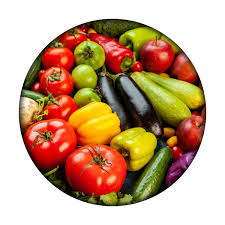
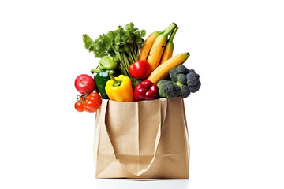

Shop the Best Fresh Groceries
Online Now!
Explore and buy the fresh food Quality with our shop.
There are many variations.
Choosing the Freshest and Tastiest
Organic Products
Cruciferous
Most cruciferous vegetables are rich in vitamins and minerals such as folate and vitamin K.
Organic Vegetables
Organic farmers and food producers grow and produce food without using synthetic chemicals.
Healthy Leaf Green
Leafy green vegetables are an important part of a healthy diet.

Dry Fruits & Nuts
Nuts and dry fruits have most of the nutritional value of fresh fruit.
Fresh Root Vegetables
Root vegetables are grown underground and include onions,potatoes, and beets, among others.
Natural Fruits
The fleshy or dry ripened ovary of a flowering plant, enclosing the seed or seeds
What our Satisfied Customer Say's
"Provided Fastest Delivery"
Initially I was very happy with FoodMart (old user). The delivery is too fast. I opened FoodMart just to see delivery charge+handling charge+high surge charge, all added to my total amount.
"User Friendly Website"
This website is very User Friendly, easy to get all details here we can easily confirm the order. all the functionality are very user friendly. I like the whole UI design.
Online Shopping
Super Market Name : WholesomeHub
Owner : Mr.Raja
Email : rajag3542@gmail.com
YouTube : WholesomeHub
Address :Karimangalam,Dharmapuri-635205
